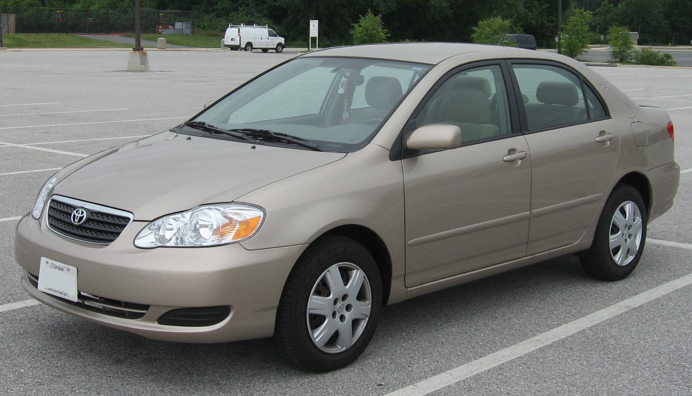

Previous car: 2007 Toyota Corolla
My first car was a used 2007 Toyota Corolla. I wasn't very appreciative of this car at first but didn't learn till after selling it, I did enjoy this car. I had a lot of good memories with it. It's a car that could fit most of my friends in and was great in gas. It was also the car that got me in the most trouble with. I did a lot of crazy things to my Corolla, being a car guy - I wanted to experiment. My first project was getting two 15 inch subwoofers that took up basically most of my trunk. Great way to wake yourself up on my mornings to school. After the subs, I wanted to stand out more so I got neon lights in the interior/exterior. I eventually drove it enough to where I was going to need new tires soon. So what did I do? I started learning how to drift, in a front wheel drive car. Okay - it wasn't really drifting. It was more like throwing the e-brake while making a sharp turn. It was more like power sliding. I would find abandoned lots to practice in and then take it to the streets. Stupid, I know but I was a teenager so I can afford to do stupid things back then. It was also how I ended up getting pulled over a bunch of times. I lived in a small town, the cops that pulled me over eventually started recognizing me and my car. Not very many corollas around with loud music and lights.
==================================================================================================================================================================
- - - - - - - - - - - - - - - - - - - - - - - - - - - - - - - - - - - - - - - - - - - - - - - - - - - - - - - - - - - - - - - - - - - - - - - - - - - - - - - - - - - - - - - - - - - - - - - - - - - - - - - - - - - - - - - - - - - - - - - - - - - - - - - - - - - - - - - - - - - - - - - - - - - - - - - - - - - - - -
==================================================================================================================================================================
Current car: 2004 Nissan 350z
Now the fun begins. I still own this car till this day but it will probably be gone by the end of this year. I remember driving around in my Corolla and seeing cars I'd want next. I was sold on a Mitsubishi Eclipse, until I saw a 350z in person at my local Walmart. I instantly fell in love with the look. After graduating high school in 2010, my parents let me get one but I had to be in charge of finding one to buy and selling my car first. I did both, through craigslist. I ended up buying the car from an older lady in Topeka who kept it in mint condition. It was kind of funny meeting her, her husband came and told me he was a cop. He warned me not to go too crazy. That was a warning I ignored. As soon as I got the car, 130 mph on the highway back home. I already had a list of modifications I wanted to do.
- Motordyne Shockwave TDX2 Exhaust
- Plenum Spacer
- Jimwolf popcharger (intake)
- Bronze Work emotion XD wheels staggered
- Single 12 inch subwoofer
- Aftermarket touch screen headunit
All of this came over the years I've owned it, mostly from 2010-2015 in my college years. I had a job I worked which paid for all the aftermarket parts. In total, I spent around $5000-$6000. This car is where I really learned how to control the power and steering in a car. I practiced taking traction control off and drifting or purposely going sideways to learn how to feather the gas pedal and steer the car. It helped me be able to drive in the snow confidently. This car easily lost control then. Surprisingly, I got pulled over less in this car than I did my Corolla. I was smarter with this car though, I limited the stupid things I did with this car. That doesn't mean I didn't drive recklessly in it. I still did (and may still do).
==================================================================================================================================================================
- - - - - - - - - - - - - - - - - - - - - - - - - - - - - - - - - - - - - - - - - - - - - - - - - - - - - - - - - - - - - - - - - - - - - - - - - - - - - - - - - - - - - - - - - - - - - - - - - - - - - - - - - - - - - - - - - - - - - - - - - - - - - - - - - - - - - - - - - - - - - - - - - - - - - - - - - - - - - -
==================================================================================================================================================================
My next car: 2024 Toyota Supra
Toyota finally brought the Supra in 2020, with the help of BMW. The Supra is using BMW's B2 engine which was brough back to Toyota where they tweaked it so it met their standards. The rest of the design I believe was Toyota. I was estatic to hear the Supra was coming back, afterall it was my dream car as a kid. The car market right now is not that great and on top of that, this car is super hard to find. Not very many are being produced and dealerships are upping the price due to demand. Luckily, a dealership in KC is not and I placed a deposit with Molle Toyota back in August 2023. Still waiting to hear back about my allocation, I recently found out I am 4th in line (previously 8th) so hopefully not much longer. I already have a list of parts I want.